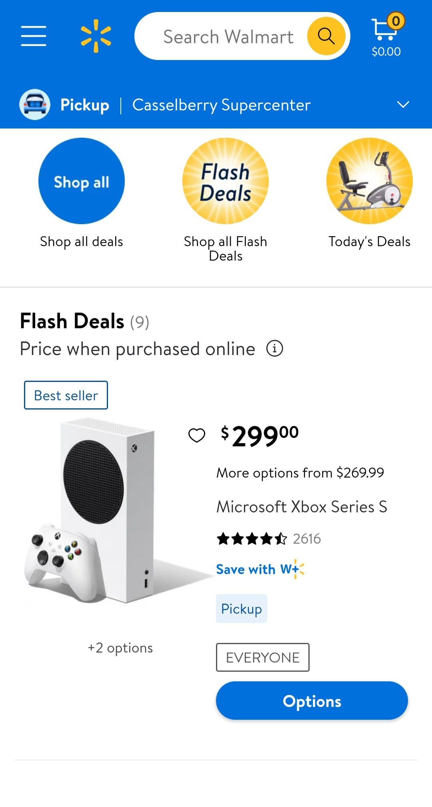
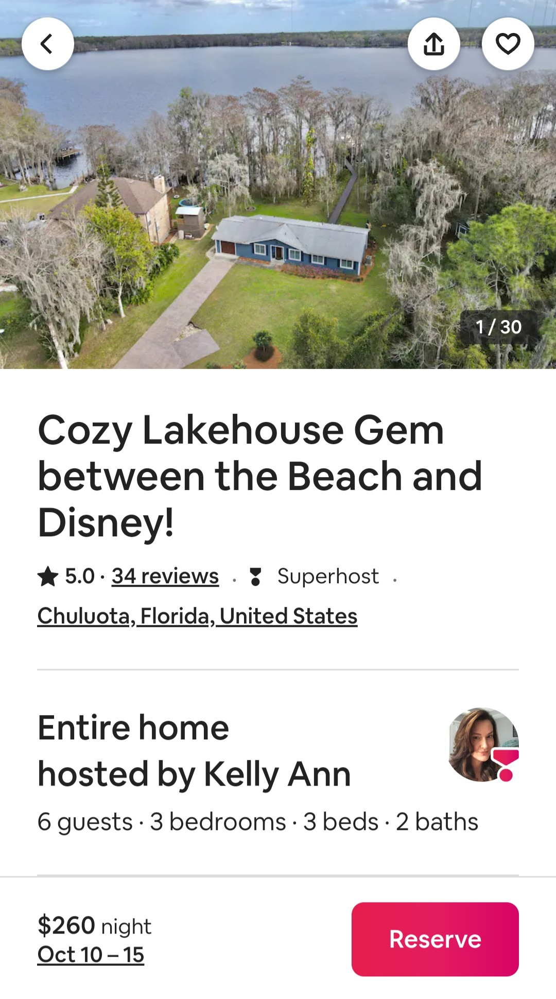

Hicks Law
Walmart

The Walmart homepage utilizes Hicks Law, specifically when a user accesses their navigation
menus. By utilizing Hicks Law, walmart provides the consumer with a very large list of
options. The intention behind this is the exact purpose of Hicks Law which states
"The more choices you present your user with, the longer it will take them to reach
a decision." The primary purpose behind this approach is to keep consumers on their
website longer and potentially lead to more sales due to a greater number of options.
Fitts Law
AirBnB

AirBnB utilizes Fitts Law in their homepage by locking and enlarging the reserve icon
and reservation information. This specifically highlights the button to reserve to the user
with the intention of prompting the user to book a reservation. Fitts Law states "The time to
move to a target depends on how big it is and on how far away it is." By enlarging the reservation
icon, AirBnB makes it the most convenient part of the booking process.